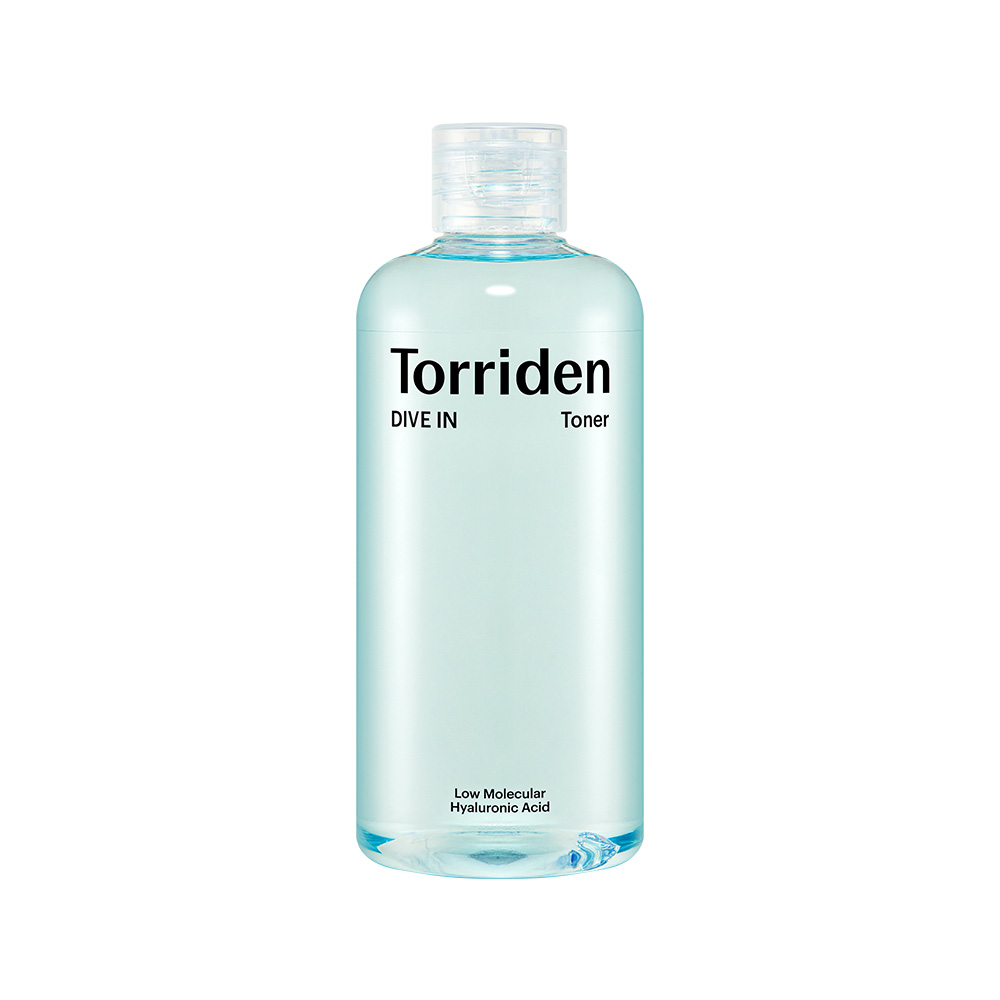
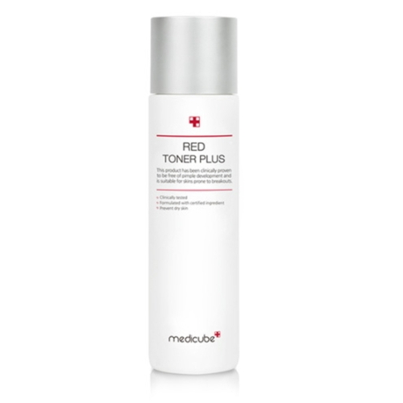
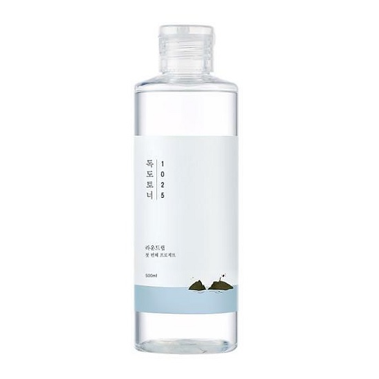
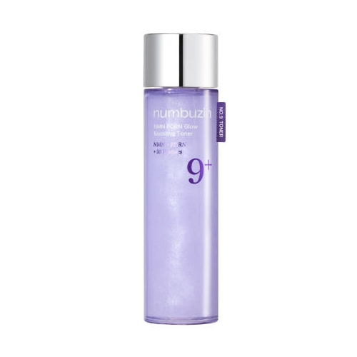
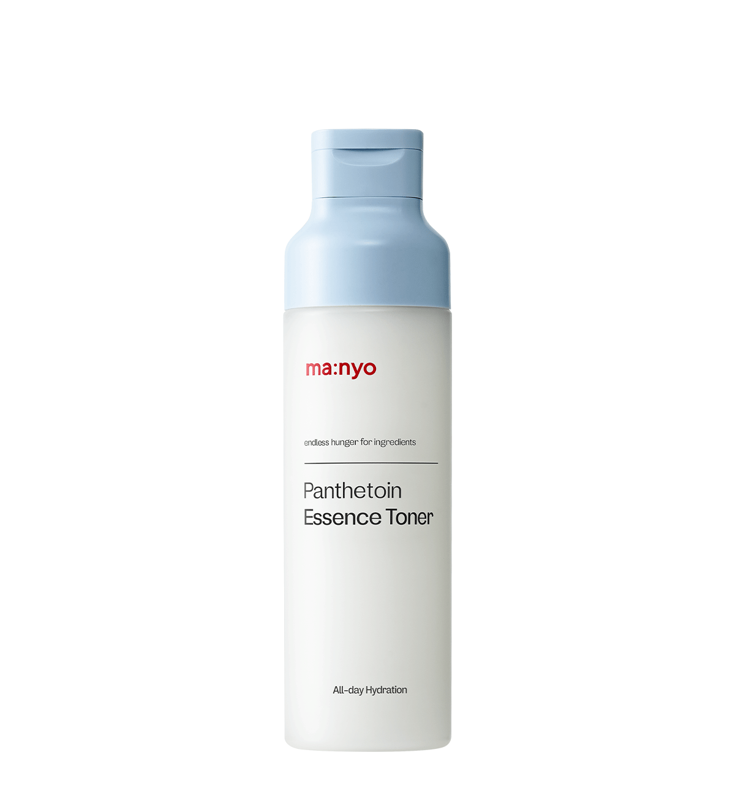
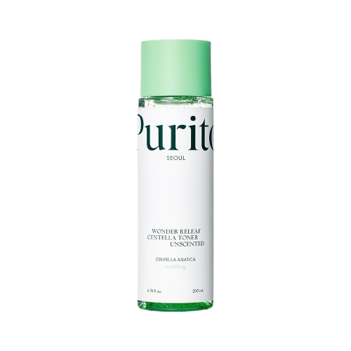

Home › Korean Toner
6 Best Korean Toners for Glass Skin (2026)
Korean skincare worth trying
I rounded up 6 Korean toner worth knowing — the ones K-beauty fans keep coming back to. Real products, honest notes, and roughly what they cost. Prices are approximate; check the retailer for today's price.

Low Molecular Hyaluronic Acid Toner
Great for hydrating oily skin
≈ $8.0 (approx) · Ships worldwide
Check price on Amazon →
Red Toner Plus
Soothes redness and irritation
≈ $12.3 (approx) · Ships worldwide
Check price on Amazon →
1025 Dokdo Toner
Large size for long lasting hydration
≈ $9.7 (approx) · Ships worldwide
Check price on Amazon →
9 NMN PDRN Glow Treatment Toner
Gives skin a radiant glow
≈ $8.3 (approx) · Ships worldwide
Check price on Amazon →
Panten Toner Essence
Perfect for balancing skin pH
≈ $10.6 (approx) · Ships worldwide
Check price on Amazon →
Wonder Relief Centella Toner Unscented
Gentle and non-irritating
≈ $18.3 (approx) · Ships worldwide
Check price on Amazon →Save for later
Prices are approximate and pulled from public shopping data; always check the retailer for the current price and shade/size before buying.